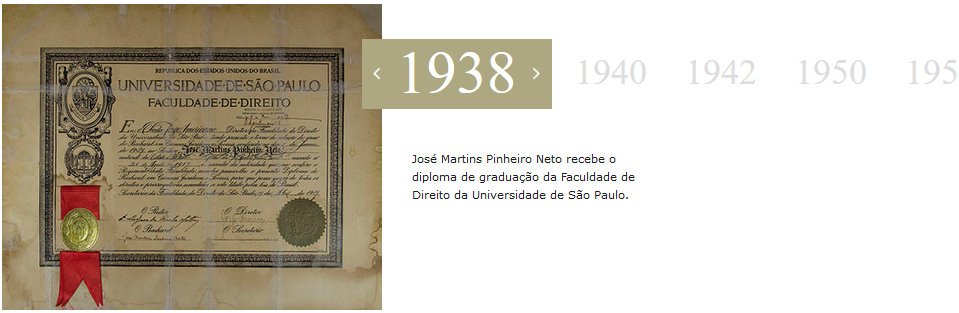

independente.
multidisciplinar.
completo.
Pinheiro Neto Advogados é um escritório brasileiro, independente, de atuação diversificada (full service), especializado em operações multidisciplinares e capaz de traduzir o ambiente legal brasileiro em benefício de seus clientes nacionais e internacionais.
Pinheiro Neto Advogados foi uma das primeiras firmas no Brasil a prospectar clientes estrangeiros e se especializar em direito empresarial. À medida que a indústria brasileira foi se desenvolvendo e a economia se sofisticando, a carteira de clientes nacionais foi se expandindo, e atualmente representa aproximadamente a metade dos nossos clientes.
Pinheiro Neto Advogados é o parceiro institucional brasileiro do estudo GLEE (Globalização, Advogados e Economias Emergentes), conduzido pelo Centro de Estudos Profissionais da Faculdade de Direito de Harvard.
Pinheiro Neto Advogados é parceiro brasileiro do projeto de pesquisa e inovação tecnológica para a área jurídica desenvolvido conjuntamente pela Thomson Reuters e pela Samsung com apenas umas poucas firmas em todo o mundo.
A firma cresceu de maneira orgânica e desenvolveu uma cultura própria, integrada, com baixo número de associados por sócio.
O escritório representa clientes nacionais e estrangeiros atuantes numa ampla gama de setores, incluindo automotivo, serviços bancários e financeiros, construção e materiais de construção, energia e recursos naturais, meio ambiente, gestão de resíduos, saúde, petróleo e gás, imobiliário e tecnologia.
O escritório tem correspondentes em todo o Brasil e mantém relacionamento estreito com firmas de primeira linha em diversos países.
Em decorrência de sua atuação diversificada e da excelência de seus profissionais, o escritório é capaz de prestar assistência a clientes de qualquer setor econômico em todas as áreas do Direito, o que lhe permite desenvolver relacionamentos de confiança mútua, tanto no dia-a-dia como em decisões estratégicas, envolvendo questões legais sofisticadas, complexas ou tecnicamente desafiadoras.
FOLDER
INSTITUCIONAL
fundado em 1942
com uma proposta
inovadora

construção da cidadania
Pinheiro Neto Advogados foi o primeiro escritório de advocacia brasileiro a neutralizar suas emissões de carbono. Foi também o primeiro escritório brasileiro a integrar o Grupo de Institutos, Fundações e Empresas (GIFE), que agrega os maiores investidores sociais do Brasil. Desde 2009, o escritório remunera o trabalho de seus advogados em prol de causas sociais, através de seu pioneiro programa de atuação pro bono. A gama de projetos de cunho social da qual Pinheiro Neto Advogados participa é extensa. Desde 1942, formamos parcerias com diversas entidades em programas de responsabilidade social com foco em educação, inserção de jovens no mercado de trabalho, saúde, cultura, meio ambiente, igualdade de gênero e inclusão de pessoas portadoras de deficiência. Conheça um pouco mais sobre nossos principais projetos:
VÍDEORelatório de Atividades Sociais
a gestão de talentos
é responsabilidade
de todos os sócios.
Em 2013, o escritório recebeu do governo do estado de São Paulo o Selo Paulista da Diversidade, que reconhece iniciativas estruturadas relacionadas a diversidade no ambiente de trabalho. No mesmo ano, Pinheiro Neto ganhou o Euromoney’s Americas Women in Business Law Awards pelo Melhor Programa Nacional de Mentoring (Best National Mentoring Program - Latin America).
SÃO PAULO
Rua Hungria, 1100. 01455-906 Tel: +55 (11) 3247-8400 Fax: +55 (11) 3247-8600
RIO DE JANEIRO
Rua Humaitá, 275 - 16º andar. 22261-005 Tel: +55 (21) 2506-1600 Fax: +55 (21) 2506-1660
BRASÍLIA
SAFS, Qd. 2, Bloco B Ed. Via Office 3º andar. 70070-600 Tel: +55 (61) 3312-9400 Fax: +55 (61) 3312-9444

PALO ALTO
228 Hamilton Avenue, 3rd floor CA 94301 USA Tel: +1 650-798-5068